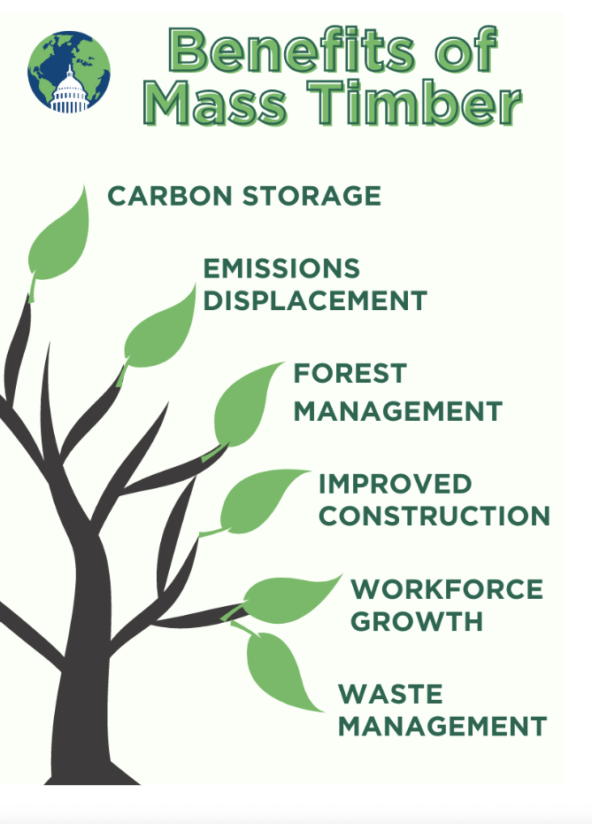

Alright, new day new blog. A few weeks ago there was this YouTube video I watched and you know when you’re just on YouTube for too long or like fall asleep and then wake up in the middle of the night to YouTube just playing? Yeah, oddly enough the video got me hooked. Now you’re all probably dying to know what I watched or just thinking of skipping this whole thing to search for the video. So listen up folks I feel that this is a very important thing to know because we use many variety of wood products. The video is right below.
If y’all don’t want to watch. Let me tell you what I learned from it. So the video starts off with a loaded truck, and then the weighing processes determines the weight of the logs received. After unloaded by the crane, the empty truck returns for a second weighing, making accurate calculations of the logs' weight. And sustainability is their core focus throughout this milling process. (Lesson 13 - Collum’s Lumber Products)
They get laser scanning technology for cutting and slicing wood while waste materials, like bark, are repurposed for industrial fuel. From debarking to sorting, each step is executed with precision which produces high-quality lumber and minimizing waste at the same time. Then, following the drying in the kiln, lumber is good for shipment. Sustainability and quality just intersect so seamlessly, there’s just something nice and satisfying about knowing that you know. It really shows the commitment to their excellent operation. And now you know how lumber is made and where most of our wood products like home furniture stuff start from. (Lesson 13 - Collum’s Lumber Products)
Speaking of which. Another thing I got interested in was the Cross Laminated Timber (CLT). I was looking into some CLT buildings actually because I wanted to see what’s the most recent one and how it looks. There was one structure that stood out: the Ascent, nestled at 700 E Kilbourn Ave, Milwaukee, WI 53202. It was developed by New Land Enterprises, their construction began in 2020 and was completed in 2022. (Urban Milwaukee)
Ascent isn't just a building though it's a fusion of architectural innovation and sustainability, REDEFINING urban living. An impressive height of 284 feet (87 meters labeled the tallest Timber for a reason) and spans 25 stories with 493,000 square feet of space. Now this is a towering symbol of modernity. Get this it’s all TIMBER. Not only aesthetic but also has environmental benefits. AND has 259 apartments, AND a sixth-floor pool, AND a penthouse amenity level. Ascent isn't just a residence at this point; it's an experience, elevating urban living to new heights (pun intended). (Project Ascent)
So far the new things I’ve learned were interesting. But carbon sequestration? Just the other day I had a little convo with somebody about it and you probably know who you are if you’re reading this. But you learn something new every day am I right?
They asked me if I knew that using wood for construction actually helps store carbon and reduce CO2 in the atmosphere. Me: No?... Them: Yeah, so trees absorb carbon dioxide during photosynthesis, which is pretty neat. BUT when we harvest trees for wood products, stored carbon releases back into the atmosphere. SO, while wood construction can temporarily store carbon, we need to think about the whole life cycle of wood products. (Lesson 17)
That means considering everything from extraction to disposal. It's important to know carbon neutrality over time. And when we compare wood to concrete or steel, we have to look at the big picture. Sure, wood has its perks, but sustainable forest management is just as important. If we keep our forests healthy it’ll continue sequestering carbon and supporting ecosystems. End goal fights off climate change a bit. (Lesson 17)
As we conclude our exploration of lumber production and sustainable construction, it's clear we've unearthed some intriguing new knowledge. From Collum’s Lumber Products to Ascent's eco-conscious design. The real eye-opener? Trees, our unsung carbon storage heroes. Wood offers undeniable benefits, sustainable forest management is essential to combat climate change.